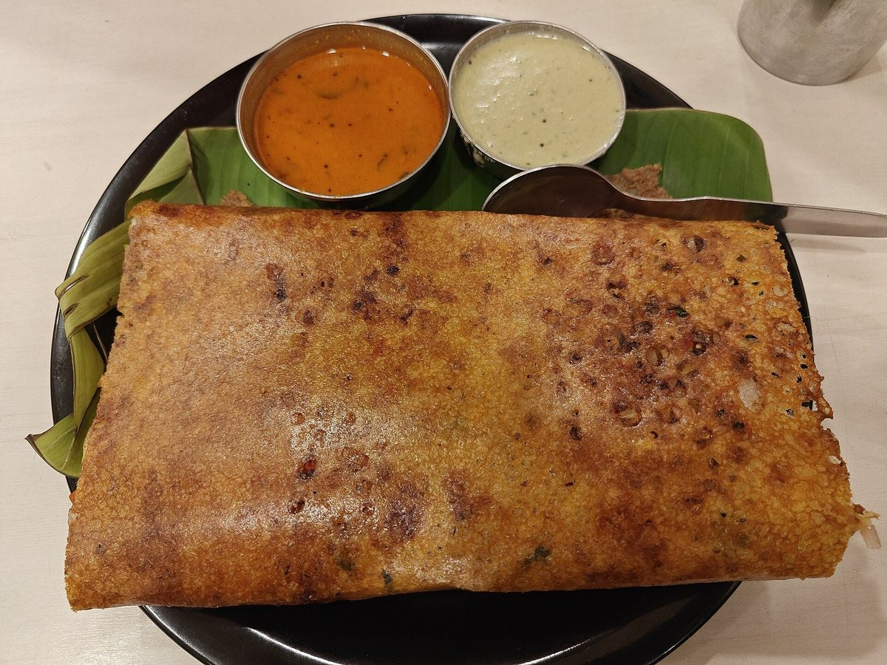
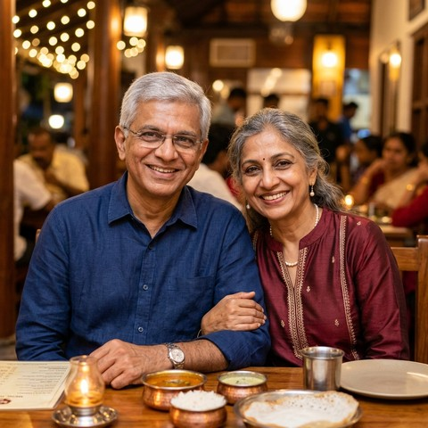

Pure Veg
Chef's Pick
Malligai Poo Idli
Three jasmine-soft steamed rice cakes paired with piping-hot Arachuvitta drumstick sambar and three chutneys.
£8.50Every dawn at 4:30 AM in Covent Garden, our granite wet-stones turn heirloom aged rice and black urad into velvety batter—served piping hot on fresh banana leaves with brass-davara degree kaapi.

Prepared in small batches from 6:30 AM using naturally fermented batter, pure Kangeyam cow ghee, and house-roasted podi.
Three jasmine-soft steamed rice cakes paired with piping-hot Arachuvitta drumstick sambar and three chutneys.
£8.50
Lacy cast-iron roast generously dusted with roasted lentil-chilli milagai podi and drizzled with farm cow ghee.
£14.50
Aerated whole-urad lentil rings studded with crushed Tellicherry pepper, ginger, and curry leaves—shatter-crisp outside.
£9.50
Slow-simmered raw rice and moong dal folded with aromatic ghee, cumin, whole black pepper, and golden cashews.
£11.50Four non-negotiable kitchen rituals we have kept unchanged since opening our first shutter on North Mada Street.
Slow granite wet-grinding keeps the batter cool, preserving wild lacto-fermentation for feather-light idlis without soda.
We roast podi dosas and temper chutneys exclusively in wooden-chekku gingelly oil and pure A2 bilona cow ghee.
Sweet fresh coconuts are cracked and ground thrice daily—never refrigerated overnight—for unmistakable creamy sweetness.
80:20 single-origin Arabica-Peaberry and roasted chicory dripped through heavy brass filters, pulled high into frothy perfection.
Heirloom recipes passed through three generations, prepared with slow stone grinding, pure cow ghee, and unhurried craft.

Paper-thin fermented crepe roasted slowly in Kangeyam cow ghee into a towering temple spire of golden crunch.
£16.00
Plump, fluffy griddle pancake studded with caramelised shallots, crushed green chillies, and curry leaves.
£14.50
A ceremonial midday feast: fragrant ponni rice, drumstick sambar, pepper rasam, vegetable kootu, appalam, and warm semiya payasam.
£24.00
Feather-edged hoppers with pillowy centers served alongside first-press coconut milk stew simmered with whole cloves.
£15.00From the first morning whistle of our idli steamers to the evening degree kaapi pull, experience the full rhythm of traditional dining.
Idli, Vada, Pongal, Ghee Roast & Degree Kaapi
6:30 AM – 11:30 AMUnlimited Sadhya, Sambar, Rasam, Kootu & Payasam
12:00 PM – 3:30 PMRava Dosa, Kuzhi Paniyaram, Mirchi Bajji & Bonda
4:30 PM – 10:00 PM
Read authentic reflections from morning regulars, London critics, and multi-generational families dining at Amma's.
“After an early morning stroll through Covent Garden, nothing in London compares to Amma's Malligai Idli drowned in arachuvitta sambar and a frothy brass tumbler of degree kaapi. It tastes identically to the authentic heirloom tiffin recipes of my childhood.”
“Amma's Tiffin House has mastered the elusive science of natural wild fermentation. The ghee roast is impossibly crisp, the chutneys are ground thrice daily, and the hospitality feels like coming home. An absolute British culinary jewel.”

“Our Sunday family ritual for twelve years. Three generations sharing crispy medu vadas, kovil ven pongal, and sweet jaggery sakkarai on glossy green banana leaves. The warm service of the team never falters.”